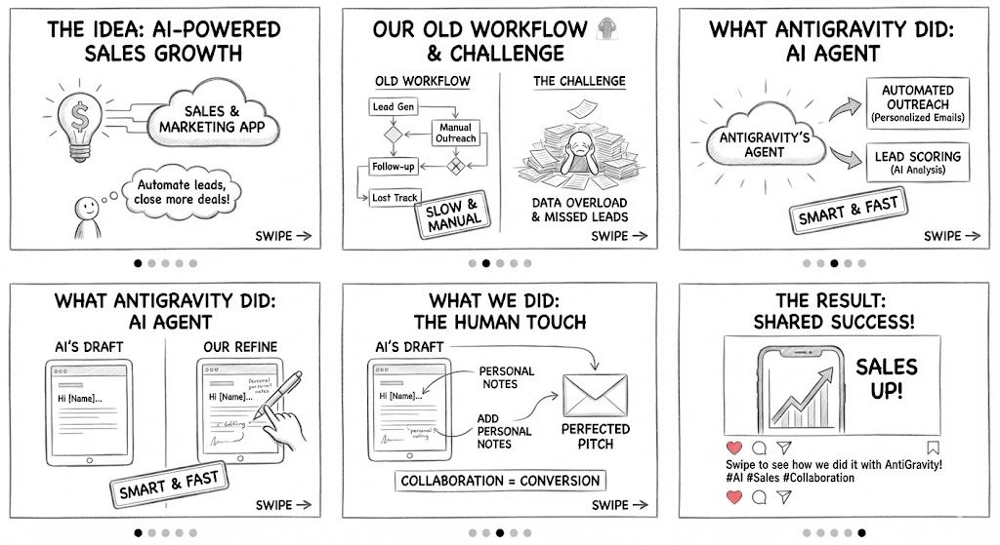
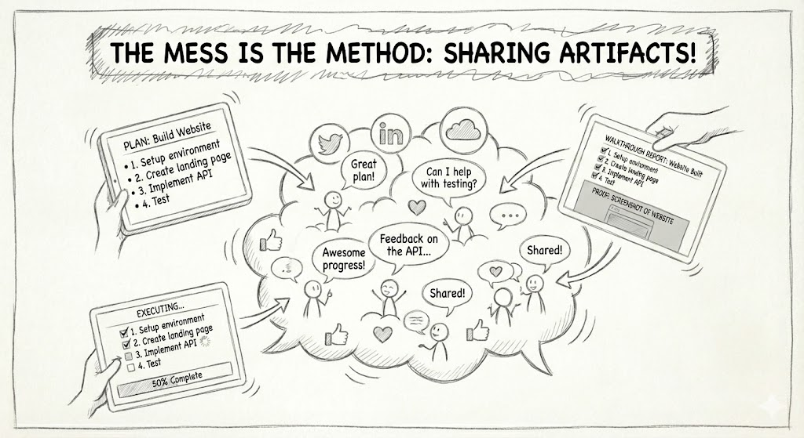
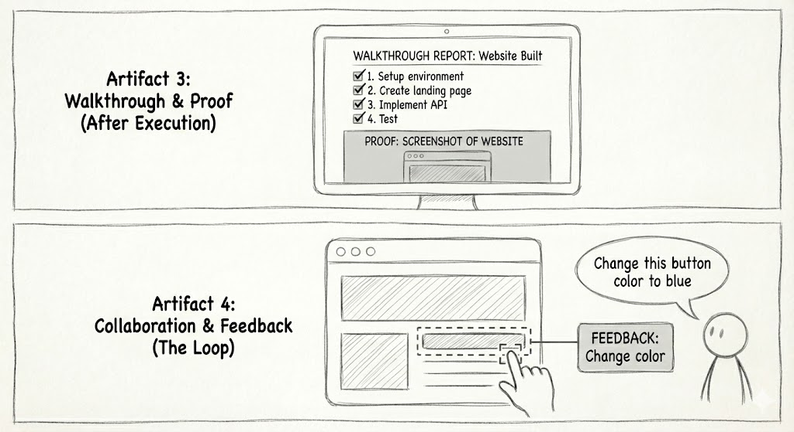
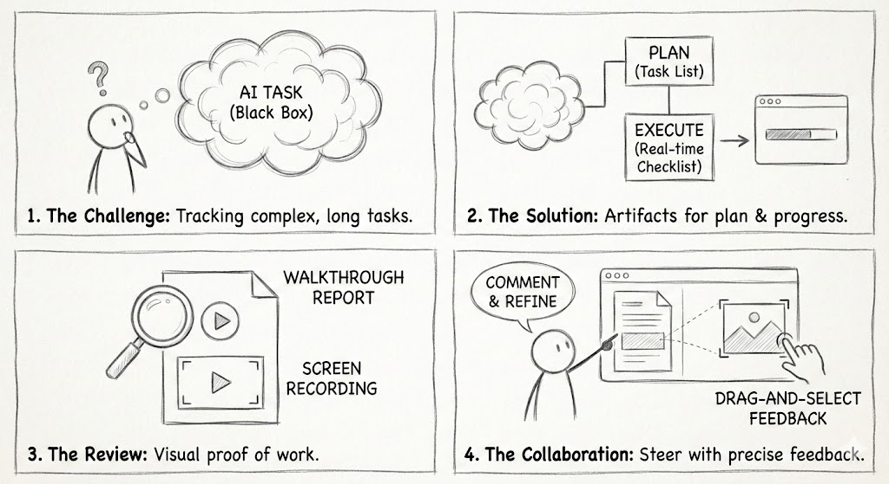

The edge isn't access
When everyone has the same models, the edge isn't access — it's knowing what good looks like. The AI Sandwich: humans are the bread.

Half-formed ideas and things I want to remember. Not essays — notes. They change as I learn, which is the whole point.
When everyone has the same models, the edge isn't access — it's knowing what good looks like. The AI Sandwich: humans are the bread.

You need an actual method, not a vibe. I write the rubric before I write the prompt — then each step gets graded before the next one fires.
You don't need to be a developer. You need five commands and the nerve to paste them. Here's the exact set I started with.

Build → show → get a note → fix. The loop is where the quality lives. Single-shot prompting has a ceiling; chaining breaks through it.

One giant prompt is a slot machine. Small steps, each verified, is a machine. Boring, repeatable, and it actually ships.
The shape of every good session. Name the challenge plainly, let AI draft the solution, then put a human eye on it before it counts.

Neither have the C-levels I'm trying to reach. So I stopped sending email. Get clever about where attention actually lives.
I don't write to publish. I write to think. Half of what's on this site I didn't understand until I tried to explain it.